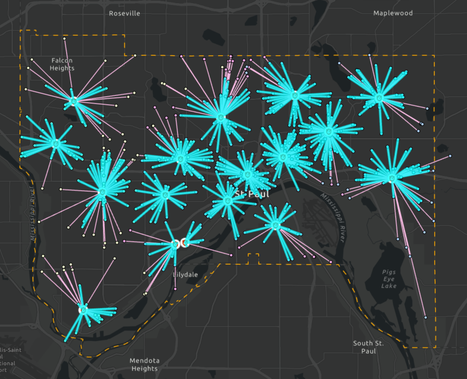
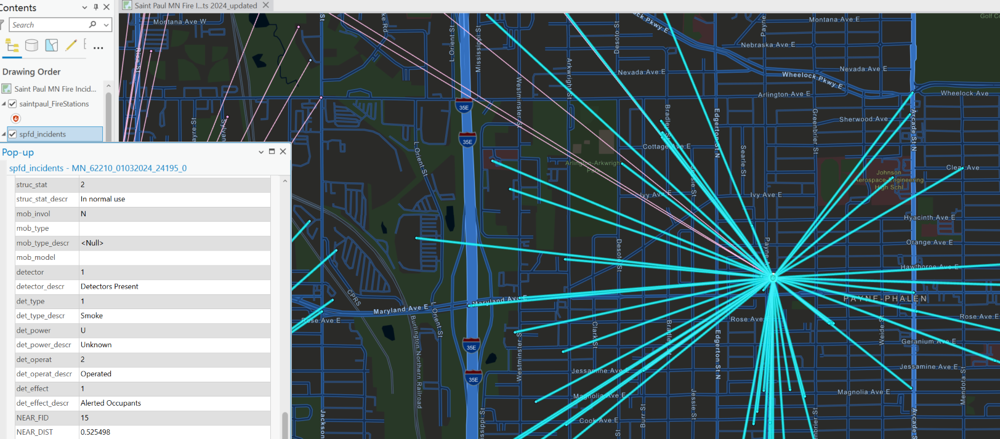
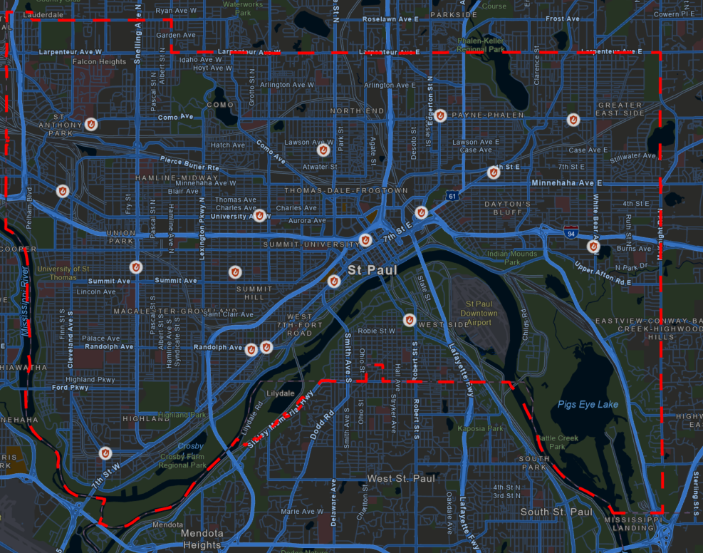
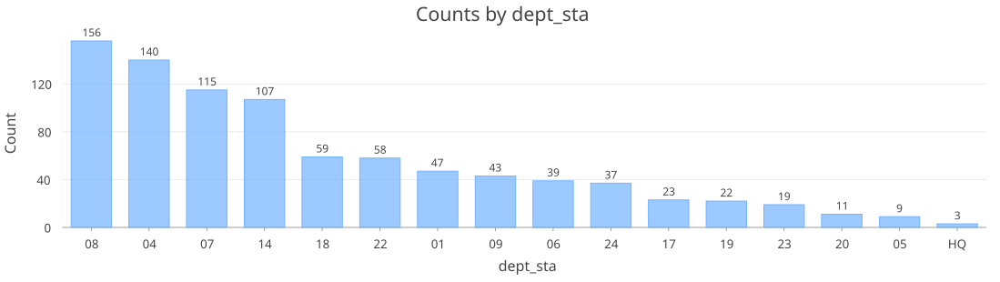

Published: Thu 19 June 2025
By Brian Estevez
In GIS .
tags: Fire Risk Fire Fighters GIS
Motivation While not commonly so severe, fires can quickly spread and cause death and injury without warning. Accidents, such as those that occur when cooking, are a major cause of fires. For example, in the City of Saint Paul a house fire caused by an unattended candle took the lives of four children: 5-year-old Siv Ntshiab and her twin Ntshiab Si; 4-year-old Mauj Tshos Ntaj; and 1-year-old Muaj Vang (Jan 3, 2024 1:30AM in the morning). Unthinkable as it is, there were 6 individuals home. Were it not for the quick response and actions of these Saint Paul fire department first responders, it could've been even worse.
Historically, fire departments shared their data with the National Fire Incident Reporting System. This NFIRS database managed by FEMA is a standardized system that fire departments use to report on their activities from fire incidents to emergency medical services, and much more. Notably, reporting is voluntary and there are gaps or missing entries in those reports. Although, NFIRS is being phased out for a newer reporting system (NERIS), NFIRS is still very instructive on the patterns and structures involved in fire incident management and analytics.
2024 Fires in Minnesota In 2024, approximately ~358,000 incidents were reported to NFIRS across all participating Minnesota fire departments. Roughly, ~2% (6,258) of those were incidents involving fires.
Nearly 15% or ~ one in six of those fires (924 / 6,258) occurred in the Saint Paul, MN area alone. There were a total of 8 civilian deaths, including 4 of those deaths that occurred in a single family's home. Returning back to that tragic case, how were first responders able to arrive so quickly (i.e., in a little over 3 minutes)?, is that typical? and what is considered a good response time? This is where analysis of fire department incident data and geographic information systems come into play. Let's address the point of how fire departments are able to reach civilians so quickly. In Saint Paul there are at least 16 different fire stations at different locations. The placement of those stations was likely a strategic choice given that they are pretty evenly spaced across the response area. Consistent with that idea, is the distance from fire stations to fire incidents, with 90% of stations within 1 mile of those fires. Whether it would be worthwhile to add stations to cover those incidents above 1 mile from their nearest station would likely depend on the need and realized impact for those residents (e.g., response times, civilian injury, deaths, population density, etc).


On average fire response times across all St. Paul stations is ~ 4 minutes. This is a good response time considering that the recommended target travel time by the National Fire Protection Association (NFPA) is 240 seconds or 4 minutes. Best practice guidelines for response time also factors in earlier components of an emergency. This includes the time from the reception of the emergency call at a dispatch center to notifying the appropriate fire station, time for first responders to get suited adn in the vehicle after they are notified (turnout time), and the finally the travel time to the incident. Together, the recommended total response time is 64 s + 80 s + 240 s or 6 minutes 24 seconds. NFIRS database provides alarm time and arrival time. Thus, we do not have direct measure of how long firefighters took to get suited and in their vehicles nor the call processing time. Rather the average response time of 4 minutes is a combination of turnout time and travel time (Arrival time - alarm time = Total response time). The newer fire incident reporting system will have better ways to track call processing and turnout times.
The St. Paul fire response area covers an area of ~ 60 square miles. Lafayette freeway and interstate highway 35 E flow through vertically south-to-north, and the I 95 runs across horizontally east-to-west. These transportation borders give the area an appearance of 5 distinct regions that enclose the 17 or so unique neighborhoods.


Understanding the personnel and population size is also important to track any gaps in service. For example, each city has a dedicated fire department assigned to that response area, and within that area there are multiple fire stations. According to the USFA registry, the Saint Paul Fire Department has 15 fire stations not including HQ, which appears to be located at Randolph Ave in Saint Paul, MN. The population in St. Paul is ~400,000 lives, and there are about 400 registered career fire fighters. How this plays out on a station-by-station basis operationally is unclear but the proportion is within range of best practices: 1 fire fighter per 1000 residents.
St. Paul 2024 Fire Incident Dashboard Taking all these finding into consideration it is not too difficult to come up with a consolidated view of these findings as a dashboard. For this ArcGIS Online Dashboard app is very straightforward once you have a published web map.
This particular dashboard is likely more simple then would be needed for daily fire management admin. The focus is only on fire incidents and excludes all other incidents, which as I mentioned earlier is a fairly small portion of the first responder's actual daily workload. Still we can easily filter and focus on particular fire stations to ask which ones handle most fire incidents?, which stations have the most fire incident injuries? There are limitations that cause the appearance of odd labels , such as blank for fields where no values were populated. In real operations these would likely be removed for clarity. However, for transparency I kept the blank or null entries in the data. One critical missing piece is the number of personnel by station, which was so poorly documented it was excluded from this dashboard. Taken together, even these simplified views of fire incident activity would be able to put useful data in a format that could help prioritize resources.
Sources
Civialian Fatality in St. Paul. https://www.cbsnews.com/minnesota/news/first-responders-speak-for-the-first-time-since-the-fatal-fire-in-saint-paul-killed-four/
NFIRS PDR data source. https://www.fema.gov/about/openfema/data-sets/fema-usfa-nfirs-annual-data